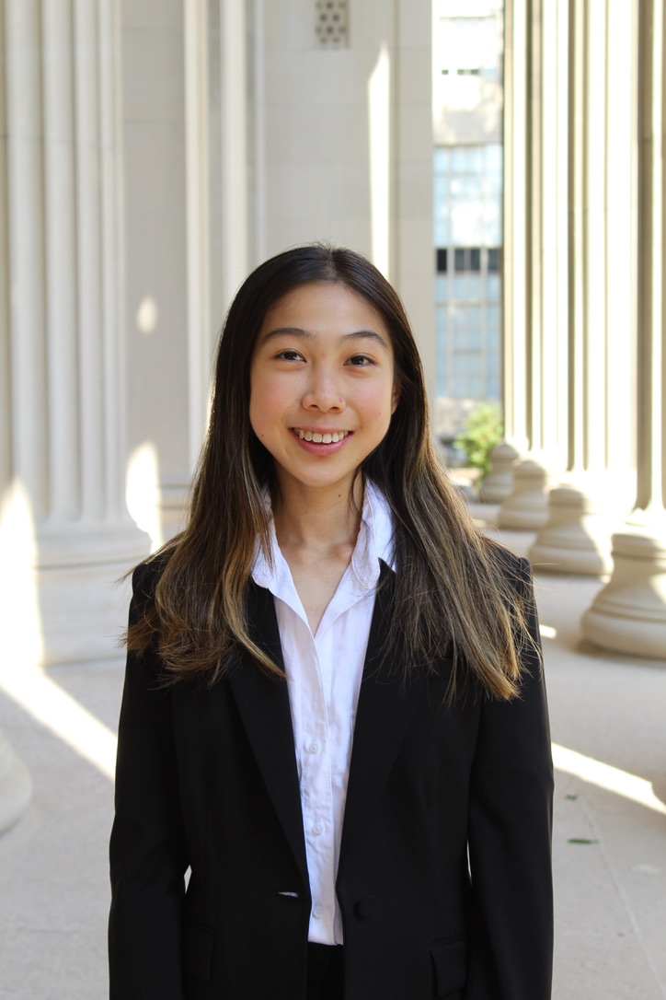

Regeneron STS Scholar
Angela Wu
Angela Wu is a rising junior at MIT studying Chemistry and Biology (Course 5-7), on the pre-med track.
She was named a Top 300 Scholar in the 2024 Regeneron Science Talent Search for her project on calcium-induced Sorcin protein aggregation, which she conducted in the lab of Dr. Yanxin Liu at the University of Maryland/Institute for Bioscience and Biotechnology Research.
She was also invited to present her research as a poster presenter at the 2024 Maryland Junior Science and Humanities Symposium. Angela is passionate about biomedical research and mentoring younger students interested in STEM.
In her free time, she enjoys baking, ice skating, and reading.